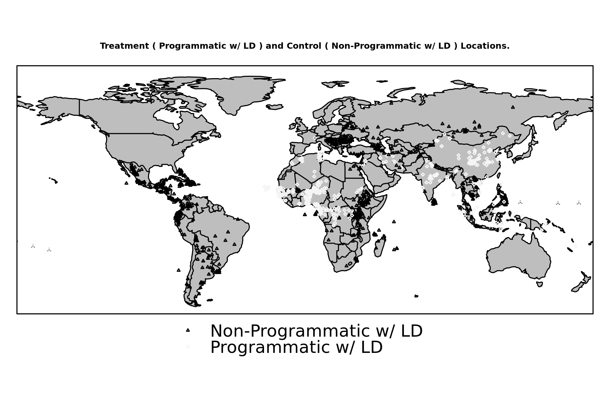
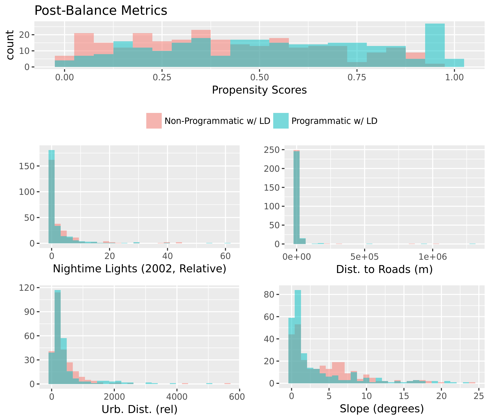
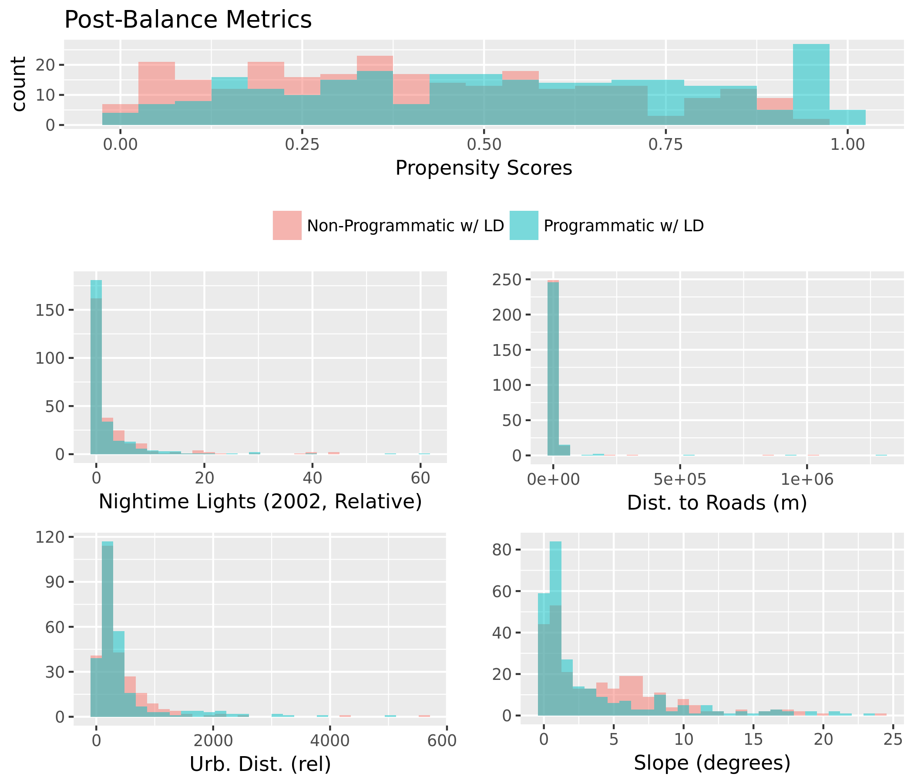

Contrast: Programmatic w/ LD (Treated), Non-Programmatic w/ LD (Control)
Treatment Cases:
146
Control Cases:
934

Figure 1. Mean Estimated Impacts from Causal Tree and Random Forest Estimation Strategies.
In this illustration, the blue vertical line is the global estimate of impact from the random forest.
The range of uncertainty is illustrated using a histogram, indicating the proportion of simulations which result in positive or negative estimates.
Specific confidence intervals can be calculated for this global estimate, or for individual project locations. A map of project location uncertainties is presented below.
Descriptive Statistics for Programmatic w/ LD (Treated) |
| Statistic | Mean | St. Dev. | Min | Median | Max |
|
| Dist. to Rivers (m) | 2,049.14 | 832.49 | 789.71 | 1,885.34 | 5,747.26 |
| Dist. to Roads (m) | 5,584.11 | 14,703.25 | 172.55 | 2,776.51 | 156,799.20 |
| Elevation (m) | 412.73 | 392.88 | 3.47 | 342.89 | 2,591.39 |
| Slope (degrees) | 1.01 | 1.58 | 0.11 | 0.50 | 12.23 |
| Urb. Dist. (rel) | 338.73 | 506.43 | 8.96 | 217.31 | 5,112.51 |
| Pop. Density (2000) | 102.07 | 261.16 | 0.03 | 33.34 | 1,865.62 |
| Protected Area % | 31.77 | 75.02 | 0.00 | 0.00 | 270.81 |
| Treecover (2000, %) | 5.42 | 11.05 | 0.00 | 0.001 | 68.16 |
| Latitude | 14.58 | 6.95 | 5.33 | 13.64 | 46.29 |
| Longitude | 7.21 | 12.10 | -16.56 | 5.55 | 38.91 |
| Max Precip. (2002, mm) | 166.19 | 91.48 | 2.65 | 150.23 | 512.05 |
| Min Precip (2002, mm) | 1.26 | 6.02 | 0.00 | 0.00 | 60.41 |
| Mean Precip (2002, mm) | 50.55 | 39.42 | 0.52 | 37.03 | 203.16 |
| Max Temp (2002, C) | 32.22 | 3.55 | 18.85 | 33.79 | 36.20 |
| Min Temp (2002, C) | 21.22 | 5.08 | 0.77 | 23.44 | 26.30 |
| Mean Temp (2002, C) | 27.09 | 3.49 | 10.50 | 28.24 | 30.59 |
| Nightime Lights (2002, Relative) | 1.56 | 6.12 | 0.00 | 0.00 | 55.41 |
| NDVI (2002, Unitless) | 1,825.34 | 601.04 | 793.79 | 1,671.08 | 3,590.06 |
| years since implementation | 0.11 | 0.31 | 0 | 0 | 1 |
| gef phase 4 | 0.03 | 0.18 | 0 | 0 | 1 |
| gef phase 5 | 0.97 | 0.18 | 0 | 1 | 1 |
| Programmatic w/ LD | 1.00 | 0.00 | 1 | 1 | 1 |
| 2013 Forest Cover (Sq. km) | 0.86 | 3.14 | 0.00 | 0.00 | 26.74 |
|

Propensity Model: Programmatic w/ LD (Treated), Non-Programmatic w/ LD (Control) |
| Dependent variable: |
| |
| treatment |
|
| Dist. to Rivers (m) | -0.0002 (-0.001, 0.0001) |
| Dist. to Roads (m) | -0.0000 (-0.0001, 0.0000) |
| Elevation (m) | 0.0004 (-0.001, 0.002) |
| Slope (degrees) | -0.21* (-0.46, 0.04) |
| Urb. Dist. (rel) | 0.001 (-0.001, 0.004) |
| Pop. Density (2000) | -0.001 (-0.003, 0.002) |
| Protected Area % | -0.01*** (-0.02, -0.005) |
| Treecover (2000, %) | -0.02 (-0.06, 0.02) |
| Latitude | 0.12* (-0.01, 0.25) |
| Longitude | 0.01 (-0.01, 0.02) |
| Max Precip. (2002, mm) | -0.004 (-0.01, 0.005) |
| Min Precip (2002, mm) | -0.06* (-0.12, 0.01) |
| Mean Precip (2002, mm) | -0.01 (-0.04, 0.02) |
| Max Temp (2002, C) | -0.27 (-0.97, 0.44) |
| Min Temp (2002, C) | 0.18 (-0.35, 0.72) |
| Mean Temp (2002, C) | 0.46 (-0.74, 1.66) |
| Nightime Lights (2002, Relative) | -0.01 (-0.12, 0.10) |
| NDVI (2002, Unitless) | -0.001 (-0.002, 0.0004) |
| years since implementation | -1.37*** (-2.25, -0.48) |
| gef phase 4 | 13.19 (-2,552.44, 2,578.83) |
| gef phase 5 | 16.03 (-2,549.61, 2,581.66) |
| Constant | -18.65 (-2,584.30, 2,547.01) |
|
| Observations | 950 |
| Akaike Inf. Crit. | 172.70 |
|
| Note: | *p<0.1; **p<0.05; ***p<0.01 |
 

Percent Balance Improvement: |
| Mean Diff. | eQQ Med | eQQ Mean | eQQ Max |
|
| Propensity Score | 88.031 | 88.809 | 87.993 | 83.298 |
| Dist. to Rivers (m) | 99.382 | -70.891 | 99.565 | 99.991 |
| Dist. to Roads (m) | -20.321 | -11.627 | 54.493 | 91.794 |
| Elevation (m) | 45.518 | -68.883 | 17.457 | 65.892 |
| Slope (degrees) | 86.260 | 67.657 | 72.714 | 61.517 |
| Urb. Dist. (rel) | -711.667 | -5.567 | -367.601 | -332.895 |
| Pop. Density (2000) | 94.102 | -26.399 | 43.657 | 94.941 |
| Protected Area % | 64.186 | 63.942 | 64.295 | 65.520 |
| Treecover (2000, %) | 91.066 | 80.375 | 77.471 | 56.457 |
| Latitude | 62.284 | 73.193 | 71.076 | 82.406 |
| Longitude | -160.121 | -19.743 | -17.221 | 25.988 |
| Max Precip. (2002, mm) | 95.536 | -80.531 | -11.370 | 20.737 |
| Min Precip (2002, mm) | 79.532 | 68.168 | 75.906 | 91.981 |
| Mean Precip (2002, mm) | 98.479 | 57.571 | 64.127 | 86.589 |
| Max Temp (2002, C) | 88.000 | 79.664 | 74.855 | 75.547 |
| Min Temp (2002, C) | 75.482 | 85.351 | 74.839 | 0.782 |
| Mean Temp (2002, C) | 78.887 | 81.454 | 78.003 | 38.414 |
| Nightime Lights (2002, Relative) | 94.732 | 100 | 43.868 | -38.904 |
| NDVI (2002, Unitless) | 77.691 | 71.184 | 55.685 | 28.856 |
| years since implementation | 87.263 | 100 | 81.630 | 25 |
| gef phase 4 | 85.912 | 100 | 85.907 | 0 |
| gef phase 5 | 86.736 | 100 | 86.743 | 0 |
|

Matched Model: Programmatic w/ LD (Treated), Non-Programmatic w/ LD (Control) |
| Dependent variable: |
| |
| 2013 Forest Cover (Sq. km) |
|
| treatment | -0.12 (-0.34, 0.09) |
| Dist. to Rivers (m) | 0.04 (-0.32, 0.40) |
| Dist. to Roads (m) | -0.27 (-0.92, 0.38) |
| Elevation (m) | -0.23 (-0.74, 0.27) |
| Slope (degrees) | 0.01 (-0.45, 0.48) |
| Urb. Dist. (rel) | -0.33 (-0.80, 0.15) |
| Pop. Density (2000) | 0.11 (-0.23, 0.45) |
| Protected Area % | -0.08 (-0.37, 0.21) |
| Treecover (2000, %) | 0.44** (0.07, 0.81) |
| Latitude | -0.82 (-2.06, 0.42) |
| Longitude | 0.04 (-0.59, 0.67) |
| Max Precip. (2002, mm) | 0.44 (-0.35, 1.24) |
| Min Precip (2002, mm) | 0.08 (-0.22, 0.38) |
| Mean Precip (2002, mm) | -0.14 (-1.27, 0.99) |
| Max Temp (2002, C) | 0.10 (-0.91, 1.11) |
| Min Temp (2002, C) | -1.23 (-3.94, 1.48) |
| Mean Temp (2002, C) | -0.04 (-2.72, 2.64) |
| Nightime Lights (2002, Relative) | -0.31 (-0.82, 0.19) |
| NDVI (2002, Unitless) | -0.12 (-0.55, 0.30) |
| years since implementation | -0.25 (-0.62, 0.12) |
| gef phase 4 | 0.24 (-0.13, 0.62) |
| gef phase 5 | |
| Dist. to Roads (m) *Treatment | -0.44 (-0.97, 0.10) |
| Latitude *Treatment | 0.60 (-0.35, 1.55) |
| Longitude *Treatment | 0.27 (-0.34, 0.87) |
| Elevation (m) *Treatment | 0.15 (-0.43, 0.73) |
| Slope (degrees) *Treatment | -0.18 (-0.67, 0.31) |
| Treecover (2000, %) *Treatment | -0.03 (-0.38, 0.32) |
| Max Temp (2002, C) *Treatment | -0.37 (-0.89, 0.16) |
| Min Temp (2002, C) *Treatment | 1.07* (-0.08, 2.21) |
| Constant | -0.11 (-0.32, 0.10) |
|
| Observations | 56 |
| R2 | 0.83 |
| Adjusted R2 | 0.65 |
|
| Note: | *p<0.1; **p<0.05; ***p<0.01 |
Standardized Beta Coefficients for Linear Model with Heterogeneous Effects